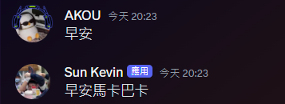

DiscordBot是一種聊天機器人，使用者可以將機器人加入自己的Discord群組，並且透過機器人實現許多不同的自動化功能。
Discord的機器人支援Javascript及Python來編寫，本次所使用的語言為Python。
目前市面上常見的機器人有:音樂機器人、統計機器人、即時顯示機器人等等，機器人可以搭配Python的各種套件，來實現各式各樣的功能。
DiscordBot是一種聊天機器人，使用者可以將機器人加入自己的Discord群組，並且透過機器人實現許多不同的自動化功能。
Discord的機器人支援Javascript及Python來編寫，本次所使用的語言為Python。
目前市面上常見的機器人有:音樂機器人、統計機器人、即時顯示機器人等等，機器人可以搭配Python的各種套件，來實現各式各樣的功能。
要使用Python撰寫一台Discord機器人，需要先到 Discord developer Portal 註冊一台機器人，註冊完成後將會獲得一組金鑰。
再來需要在Terminal使用Pip安裝Discord套件:
pip install discord
接下來就是建立一個Python檔案，輸入下列程式就可以順利連接上剛才註冊好的機器人。
import discord
intent = discord.Intents.all()
intent.message_content = True
bot = commands.Bot(command_prefix="$",intents=intent)
intent.run("TOKEN")
Cog架構簡單來說就是將不同功能分散到不同的.py執行檔中，並且在機器人的主程式中指定特定資料夾內的執行檔並載入。
這樣做的目的是在未來管理各項功能會比較方便，不管是上架新功能，或是要下架舊的功能，不需要去動主程式，只需要新增或移除Cog資料夾內的執行檔即可。
要實現這功能，需要在主要的執行檔bot.py中新增以下程式:
import os
async def load_extension():
for file in os.listdir("Cog資料夾路徑"):
if(file.endswith(".py")):
print(f"載入檔案:{file}..")
await bot.load_extension(f"cogs.{file[:-3]}")
async def main():
async with bot:
await load_extension()
await bot.start("TOKEN")
接著在各功能的獨立執行檔中新增以下這段:
from discord.ext import commands
class Example(commands. Cog):
def __init__(self,bot:commands.Bot):
self.bot = bot
async def setup(bot:commands.Bot):
await bot.add_cog(Example(bot))
Listener直接翻譯就是聆聽者，他的功能就是監看聊天室的訊息，只要抓到特定的詞語，就會觸發事件。
在增加任何事件前，為了避免機器人讀取到自己的訊息並進入無窮迴圈，必須先加入判斷，避免讀取自己發出的訊息。
if message.author == self.bot.user:
return
舉一個例子，當使用者輸入【早安】，機器人就會回覆【早安馬卡巴卡】。
@commands.Cog.listener()
async def on_message(self,message:discord.Message):
if message. Content == "早安":
await message.channel.send("早安馬卡巴卡")
圖片範例:
也能夠偵測機器人是否被@提及，若被提及則觸發事件。
@commands.Cog.listener()
async def on_message(self,message:discord.Message):
if self.bot.user in message.mentions:
await message.channel.send("?")
圖片範例:
斜線指令(Slash Command)為Discord的一項新功能，能讓機器人透過/指令來執行特定的功能。
範例中，name為這個指令的名稱，description為指令的解釋，可以讓使用者了解這個指令的功能。
使用者輸入/hello即可觸發此事件。
@app_commands.command(name="hello",description="hello world")
async def hello(self, interaction:discord.Interaction):
await interaction.response.send_message("Hello there!")
圖片範例: